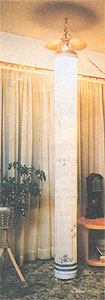
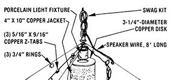
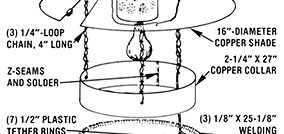
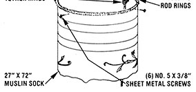

If you gather a few odds and ends, you can "make light" of our latest in "current" events:
Any piece of handwork can be a source of pride for the doer and of inspiration for the admirer. Moreover, when art serves a purpose beyond its aesthetic value, it can become even more worthwhile . . . and our unusual heat-circulation lamp is a good case in point.
The unit is really nothing more than a copper shade that's fitted with a bulb and a perforated light shield . . . but just below that tungsten globe hangs a muslin "sock" - a tube about eight inches in diameter and six feet long - which has a small electric fan housed in its foot.
And, as noted above, there are practical reasons for this attractive combination of components. Besides providing warm, diffused illumination, you see, the fixture draws hot air from the ceiling area (where it naturally collects) and pumps it down to floor level (where chilly drafts seem to run rampant). So the device not only makes efficient use of available warmth - increasing the usable heat provided by your woodstove, for instance - but furnishes some degree of air circulation, too.
MOTHER'S research director, Emerson Smyers, came up with the idea while reminiscing about the old-limey paddle fans that graced many a residence and public place not too long ago (and have recently made quite a comeback). "Most people think they were there for cooling, but they're only half right . . . those big blades did a heck of a job circulating heat, too, and anyone who doesn't believe it should take a closer look at some of the original models. Many actually had resistance elements built right around the motor housing that could be switched on in the winter to throw off additional warmth."
In an effort to adapt that technology, Emerson merely designed a more compact package and placed his fan (which uses about one-quarter the energy required by its predecessors) out of view. The result - which would cost about $45 if all new parts were used (naturally, we scrounged some of ours) - required a 19" X 27" sheet of 16-ounce copper (this item can be purchased as scrap for a couple of dollars), a porcelain socket fixture with a threaded mounting stud, a swag light kit with a switch, a 150-CFM (cubic-foot-per-minute) 8"-diameter circular fan (available from Solar Usage Now, Dept. TMEN, Box 306, Bascom, Ohio 44809 . . . write for catalog ordering information, or use any comparable muffin fan and adapt the design to fit it), about a foot of 1/4"-loop wire chain, 2 yards of muslin cloth, three lengths of copper-coated 1/8" welding rod, 8 feet of speaker wire, seven 1/2" plastic tether rings, a 4" X 27" scrap of sheet metal and a piece of foam rubber of the same size, and a half-dozen small sheet metal screws.
According to Mr. Smyers, assembling the lamp required only the most basic metalworking or electrical skills, but did call for the use of a soldering iron, an electric drill with a bit assortment, tinsnips, needle-nosed pliers, a hammer, a pin punch, and a sewing machine.
Emerson first scribed and cut out one 16" and one 3-1/4"-diameter disk, a 2-1/4" X 27" strip, and a 4" X 10" rectangle from the copper sheet. Then, using some leftover scraps, he made three 5/16" X 9/16" tabs, which he bent into Z-shapes.
Next, he bored a small hole at the center of the larger disk and removed a "pie slice" section - 2-1/2" wide at its base - from it. After bending the penny-metal pie into a shallow cone, adding (optional) decorative ribs or flutes at 1-1/4" intervals, and holding it to that shape by soldering the three Z-tabs at equal points along the seam (then filling that joint as well), the researcher drilled a 3/8" opening through the cone's apex . . . and a 1/4" hole about 3 inches from that peak. Then he soldered three 3/4" rings (which he bent from short pieces of welding rod) at equal points around the lid's lower surface to support the 8"-diameter sock collar.
The bulb's jacket is similar in construction to a tin can. To make it, Emerson - using his pin punch - first drove a patterned series of holes through the 4" X 10" copper sheet, to within 3/4 inch of each end. Then he bent a 1/8" lip into one side, formed the piece around a section of pipe to create a 3 "-diameter tube, and completed the Z-seam by trimming and bending the mating edge and soldering the seam. The can's lid is the 3-1/4" disk with a 1-1/4" hole cut through its center, and both its inner and outer edges nipped every 1/4 inch or so to allow the outside to contour to the cylinder for a clean solder joint, and the inside to grip the porcelain lamp socket.
Assembling the sock section was simply a matter of bending the long copper strip and the sheet-metal panel into 8 "-diameter rings . . . Z-ing and soldering their seams . . . and stitching the muslin to form a tube that's 8" across and about 6 feet long. The welding rods - bent into 8"-diameter rings, tacked together, and stitched into the muslin sock at 2-foot increments - hold the cloth to shape, and the 1/2" rings (sewn to the seam on the inside and about a foot apart) serve as guides for the speaker wire that powers the fan.
The motor, by the way, is held within the lower housing by the same sheet metal screws that pin the sock to the ring, and foam padding was used between the fan frame and the tin collar to subdue noise and vibration. (In a similar manner, Emerson screwed the upper part of the sock to the copper collar . . . then bored holes in that ring to accept a trio of 4" chain sections.)
Once the lamp and fan wires were joined within the lamp socket, that fixture fastened - with the aid of washers - into the conical shade, the free fan lead threaded through that lid and the guide rings, and its terminals wire-nutted to those of the motor . . . the lamp was ready to hang. But, as Emerson points out, its appearance can be enhanced by adding designs - using a quality textile-printing ink - to the outside of the muslin before the sock is assembled . . . and that hour or so of extra effort can make a pleasant world of difference!
|
 |
 |
 |
|
 |
|
|